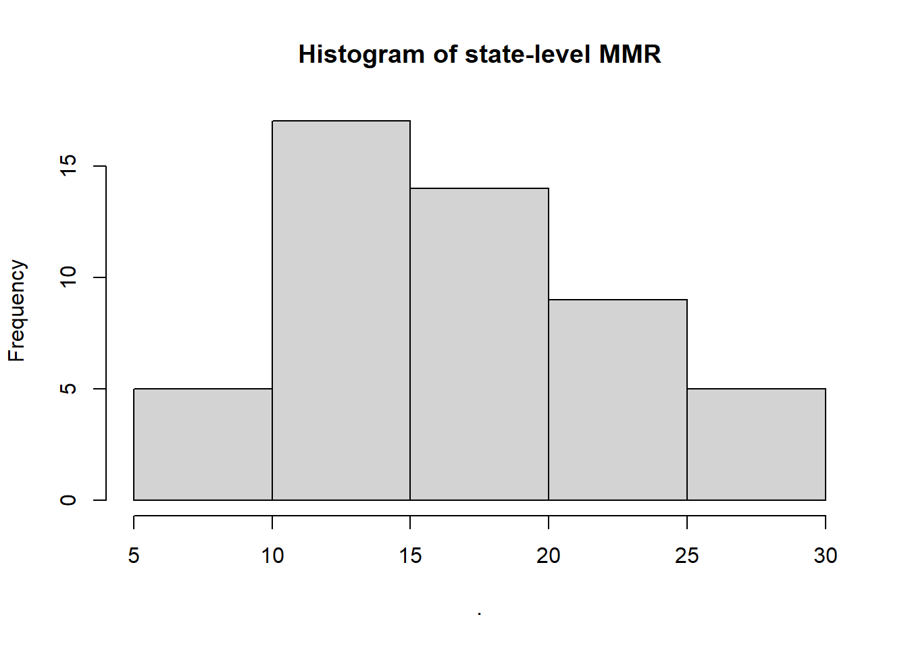
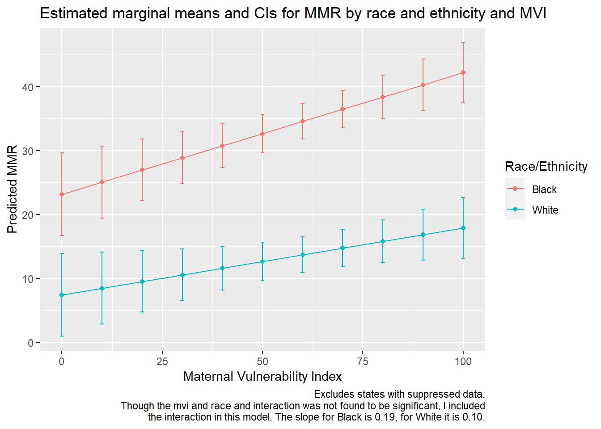

2 Racial disparities in maternal mortality in the US
2.1 Acknowledgements
Though most of the code in this case study was written by myself as the lead technical developer, the analysis and code may have been made better by my colleagues: Jordan Downey, Nick Stewart and Peter Smittenaar. This post is meant to show my analytical and programming skills, and by no means reflects the position of Surgo Ventures about this topic, nor does it comprise a finished report or product by the organization nor the author.
2.2 Purpose
I conducted this analysis with open-source data while experiencing a delay in accessing restricted, individual-level data to evaluate the association between county-level Maternal Vulnerability, structural racism measures, and a birthing person’s individual-risk of maternal death. The secondary purpose of this analysis was to understand at what levels structural racism may or may not affect maternal health in the US - and the appropriate geographic levels to study it. The findings can help guide future analyses about the topic and inform interventions to reduce maternal health racial disparities in the United States.
2.3 Background
The US has one of the highest maternal mortality risks amongst high-income countries, along with some of the highest racial disparities - Black and Native American mothers are 2-4 times more likely to die from pregnancy-related causes than White mothers.
Evidence-based interventions are needed to address this public health crisis. However, this is hampered by surveillance data gaps and standardization issues.
It is now well-established that surveillance changes and population health trends - such as the adoption of a pregnancy check box, heart disease, diabetes and increase maternal age - contribute to the increasing maternal mortality ratios (MMR). However, it is likely that neither surveillance changes nor individual-level characteristics fully explain the marked racial disparities in maternal health.
The environments in which birthing individuals live, work and give birth in have been found to be associated with pregnancy outcomes (Mujahid et al. 2021). Existing studies tend to consider one or few covariates at a time, and systematic knowledge on how these affect maternal health outcomes is lacking in the US. Specifically, the contribution of each ‘level’ (individual, neighborhood/community, birth hospital, state) is still unknown.
Black and American Indian and Native American (AIAN) mothers are 2.6 and 1.6 more likely to live under ‘Very High’ maternal vulnerability environments as their White counterparts, suggesting part of the observed racial disparities might be attributable to ecological/environmental characteristics.
Another potential driver of these inequities is racism. Though the field is still young and developing, various structural racism metrics, like racial gap in educational attainment (Liu et al. 2019), have been associated with racial disparities in maternal health outcomes.
The objectives of this analysis are to:
Examine the relationship between maternal vulnerability index (MVI) score and maternal morality in the US.
Assess if maternal vulnerability is differently associated with Black and White maternal mortality.
Determine if residential segregation, a measure of structural racism, is associated with maternal mortality.
2.4 Methods
First, the data will be visualized. Based on the visual inspection of the relationships (see 2.7.1), I will use the following statistical analyses:
Linear regression of maternal mortality on state-level maternal vulnerability score.
Linear regression of maternal mortality by race on state-level maternal vulnerability score, including an interaction between race and MVI Score.
Linear regression of maternal mortality on state-level MVI and residential segregation, if possible.
2.5 Data sources
Open-source data were obtained from Surgo Ventures, CDC National Center for Health Statistics, County Health Rankings and the American Community Survey (US Census)
| Dataset | Source | Description |
|---|---|---|
| US Maternal Vulnerability Index (MVI) | Surgo Ventures (2021) | US MVI state-level scores (overall). The US MVI “…ranks […] states and counties on indicators measuring drivers of poor maternal health outcomes. Maternal vulnerability is assessed based on 43 drivers grouped into six themes: (1) Reproductive Healthcare, (2) Physical Health, (3) Mental Health and Substance Abuse, (4) General Healthcare, (5) Socioeconomic Determinants, and (6) Physical Environment. The MVI captures factors that put birthing people at increased risk of adverse outcomes during pregnancy that may lead to morbidities and/or death.” (Valerio et al. 2021) |
| Natality data | CDC Wonder (2020) | National Vital Statistics data including all births that occurred in the US between 2007 and 2019, to mothers between 10 and 44 years of age by state and race. |
| Mortality data* | CDC Wonder(2020) | National Vital Statistics data including all deaths that occurred in the US between 2007 and 2019, of mothers between 15 and 44 years of age by state and race. Following Hoyert (2019), deaths were included if the underlying cause of death corresponded to ICD-10 (International Statistical Classification of Diseases, 10th Revision) codes A34, O00-O95, and O98-O99. Only births and deaths to and of mothers under 45 years of age were included, following the CDC recommendations - which are based on NCHS assessment of errors. |
| Residential segregation | County Health Rankings (2020) | Measure of racial residential segregation at the state-level, where a higher score indicates more segregation. |
| Population | American Community Survey (ACS) | Size of the population in each state. |
*See Data pre-processing (subsection 2.6) for details
2.6 Data pre-processing
2.6.1 Data download
The MVI and data dictionary are downloaded from a Zenodo repository and need no pre-processing (see preview below).
# Setup ---
library(tidyverse)## -- Attaching packages --------------------------------------- tidyverse 1.3.1 --## v ggplot2 3.3.3 v purrr 0.3.4
## v tibble 3.1.1 v dplyr 1.0.5
## v tidyr 1.1.3 v stringr 1.4.0
## v readr 1.4.0 v forcats 0.5.1## -- Conflicts ------------------------------------------ tidyverse_conflicts() --
## x dplyr::filter() masks stats::filter()
## x dplyr::lag() masks stats::lag()# Download MVI data ----
# Set urls
url1 <- 'https://zenodo.org/record/5590225/files/mvi_state.csv?download=1'
url2 <- 'https://zenodo.org/record/5590225/files/mvi_data_dictionary.xlsx?download=1'
# Download data
mvi.state <- read.csv(url1)
# Use rio library because file extension is .xlsx
data.dict <- rio::import(url2)
# Preview data
head(mvi.state)## state_GEOID State mvi Th1 Th2 Th3 Th4 Th5 Th6
## 1 2 Alaska 54 12 38 38 86 32 92
## 2 1 Alabama 100 60 96 98 100 88 98
## 3 5 Arkansas 96 96 94 74 65 94 88
## 4 4 Arizona 70 94 44 68 53 90 54
## 5 6 California 34 20 42 4 12 54 82
## 6 8 Colorado 0 20 2 10 35 10 20# Data dictionary
head(data.dict)## Theme
## 1 SubTheme
## 2 Indicator
## 3 Indicator Description
## 4 Population
## 5 Geo Precision
## 6 Data Source
## Maternal Vulnerability theme name
## 1 Maternal Vulnerability Subtheme name
## 2 Indicator name
## 3 Description of the indicator included in the Maternal Vulnerability Index (MVI)
## 4 Denominator population for each indicator
## 5 Geographic aggregation levels of data obtained for each indicator
## 6 Data source(s) for each indicatorCDC’s natality and mortality data were downloaded from CDC Wonder. For reproducibility purposes, I will read the files from one of my GitHub repositories. The data are downloaded at the lowest level of detail needed for each calculation, because counts under 10 will be suppressed (this is a concern with death counts in small states, and when disaggregating by race).
# Load natality and mortality data----
## Region-level data ----
# Births
wonder_births_region_under45yo_2007_2019 <- read.csv('https://raw.githubusercontent.com/vvalerioh/valerio-portfolio/main/assets/data/wonder_births_region_under45yo_2007_2019.csv')
# Deaths
wonder_deaths_region_under45yo_2007_2019 <- read.csv('https://raw.githubusercontent.com/vvalerioh/valerio-portfolio/main/assets/data/wonder_deaths_region_under45yo_2007_2019.csv')
## State-level data ----
# Births
wonder_deaths_total_state_under45yo_2007_2019 <- read.csv('https://raw.githubusercontent.com/vvalerioh/valerio-portfolio/main/assets/data/wonder_deaths_total_state_under45yo_2007_2019.csv')
# Deaths
wonder_births_total_state_under45yo_2007_2019 <- read.csv('https://raw.githubusercontent.com/vvalerioh/valerio-portfolio/main/assets/data/wonder_births_total_state_under45yo_2007_2019.csv')
## State-level data by race and ethnicity ----
# Births
wonder_births_state_race_ethn_under45yo_2007_2019 <- read.csv('https://raw.githubusercontent.com/vvalerioh/valerio-portfolio/main/assets/data/wonder_births_state_race_ethn_under45yo_2007_2019.csv')
# Deaths
wonder_deaths_state_race_ethn_under45yo_2007_2019 <- read.csv('https://raw.githubusercontent.com/vvalerioh/valerio-portfolio/main/assets/data/wonder_deaths_state_race_ethn_under45yo_2007_2019.csv')The residential segregation data were downloaded from County Health Rankings:
## Res segregation state-level ----
df.res.segregation.state <- read.csv('https://raw.githubusercontent.com/vvalerioh/valerio-portfolio/main/assets/data/2020-America_Health_Rankings_annual_report.csv') %>%
# Filter to desired measure and select relevant columns
filter(Measure.Name == 'Residential Segregation') %>%
select(State = State.Name,
res_segregation = Value)Population data are were downloaded from the American Community Survey:
pop_race_state <- read.csv('https://raw.githubusercontent.com/vvalerioh/valerio-portfolio/main/assets/data/pop_race_state.csv')2.6.2 Pre-process
Then, I calculate:
- Maternal Mortality Ratio (MMR) for the US - using region-level data
- MMR by state - Using state-level data
- MMR by state and race and ethnicity - Using the state-level data by race and ethnicity
The Maternal Mortality Ratio was calculated as: \(MMR = (deaths/births)* 100,000 births\)
# 1 US MMR (ALL states 2007-2019)----
mmr.us <- wonder_deaths_region_under45yo_2007_2019 %>%
filter(Census.Region != '') %>%
mutate(Deaths = as.numeric(Deaths)) %>%
left_join(wonder_births_region_under45yo_2007_2019 %>%
filter(Census.Region!='') %>%
mutate(Births = as.numeric(Births))) %>%
summarize(mmr_us=sum(Deaths)/sum(Births)*100000)## Joining, by = c("Census.Region", "Census.Region.Code")# 2 State-level MMR (excludes VT due to suppression of deaths)----
mmr.state <- wonder_deaths_total_state_under45yo_2007_2019 %>%
transmute(State, Deaths = as.numeric(Deaths)) %>%
filter(State !='') %>%
left_join(wonder_births_total_state_under45yo_2007_2019 %>%
select(State, Births) %>%
filter(State!='')) %>%
mutate(mmr_state = Deaths/Births*100000) %>%
left_join(mvi.state) %>%
left_join(df.res.segregation.state) %>%
left_join(pop_race_state) %>%
mutate(mvi_mc = mvi - mean(mvi),
res_segregation = res_segregation - mean(res_segregation))## Joining, by = "State"## Joining, by = "State"
## Joining, by = "State"## Joining, by = c("State", "state_GEOID")# 3 State-level MMR by race/ethnicity (excludes various states due to suppression) ----
## Deaths by race/ethnicity ----
df.deaths <- wonder_deaths_state_race_ethn_under45yo_2007_2019 %>%
select(-Notes) %>%
filter(State!='') %>%
# Filter our 'Not Stated' Hispanic.Origin to minimize suppressed values
# This ensures that once filtering in only Black and White later, only
# Hispanic.Origins == Not Hispanic or Latino remain in the df
filter(Hispanic.Origin!='Not Stated') %>%
mutate(race_ethn = case_when(
Race == 'White' & Hispanic.Origin != 'Hispanic or Latino' ~ 'White',
Race == 'Black or African American' & Hispanic.Origin != 'Hispanic or Latino' ~ 'Black',
Race == 'American Indian or Alaska Native' & Hispanic.Origin != 'Hispanic or Latino' ~ 'AIAN',
Race == 'Asian or Pacific Islander' & Hispanic.Origin != 'Hispanic or Latino' ~ 'AAPI',
Hispanic.Origin == 'Hispanic or Latino' ~ 'Hispanic or Latino' ),
Deaths = as.numeric(Deaths)) %>%
# For White and Black race_ethn only, calculate how many suppressed values there are
# if 1 or more, that state needs to be excluded from the regression completely
filter(race_ethn %in% c('White', 'Black')) %>%
# For each State, how many suppressed values remain?
group_by(State) %>%
mutate(n_suppressed_rows = sum(is.na(Deaths)))
## Births by race/ethnicity ----
df.births <- wonder_births_state_race_ethn_under45yo_2007_2019 %>%
rename (Notes=1) %>%
select(-Notes) %>%
filter(State!='') %>%
# Filter out unknown Mother.s.Hispanic.Origin == 'Unknown or Not Stated'
filter(Mother.s.Hispanic.Origin != 'Unknown or Not Stated') %>%
mutate(State,
race_ethn = case_when(
Mother.s.Bridged.Race == 'White' & Mother.s.Hispanic.Origin == 'Not Hispanic or Latino' ~ 'White',
Mother.s.Bridged.Race == 'Black or African American' & Mother.s.Hispanic.Origin == 'Not Hispanic or Latino' ~ 'Black',
Mother.s.Bridged.Race == 'American Indian or Alaska Native' & Mother.s.Hispanic.Origin == 'Not Hispanic or Latino' ~ 'AIAN',
Mother.s.Bridged.Race == 'Asian or Pacific Islander' & Mother.s.Hispanic.Origin == 'Not Hispanic or Latino' ~ 'AAPI',
Mother.s.Hispanic.Origin == 'Hispanic or Latino' ~ 'Hispanic or Latino' )) %>%
filter(race_ethn %in% c('Black', 'White'))
# Check that no suppressed values remain before adding Births by race_ethn and State
stopifnot(df.births$Births%>%is.na()%>%sum()==0)
# Add births by race_ethn and state
df.births1 <- df.births %>%
group_by(State, race_ethn) %>%
summarize(Births = sum(as.numeric(Births)))## `summarise()` has grouped output by 'State'. You can override using the `.groups` argument.# Check that no NAs in Births column
stopifnot(df.births1$Births%>%is.na()%>%sum()==0)
#### State-level df ----
mmr.state.race.ethn <- df.deaths %>% select(-State.Code)%>%
left_join(df.births1)%>%
# Calculate mmr by race_ethnicity
# Because some values are suppressed, some MMRs (mmr column) will be NAs
# race_ethn has been filtered to White or Black only in earlier steps
# Note:
# The births used in the mmr calculation do not include
# Mother.s.Hispanic.Origin == 'Unknown or not stated"
# The deaths used in the mmr calculation do not include
# Hispanic.Origin == 'Not Stated'
mutate(mmr = Deaths/Births*100000) %>%
left_join(mmr.state %>% select(State, mmr_state)) %>%
left_join(mvi.state) %>%
left_join(census.regions) %>%
# add structural racism data
left_join(df.res.segregation.state) %>%
left_join(pop_race_state%>%select(State,
pop_wra_s,
pop_wra_black,
pop_wra_white) %>%
pivot_longer(c(pop_wra_black, pop_wra_white),
names_to = 'race_ethn',
values_to = 'pop_wra_race_ethn') %>%
mutate(race_ethn = case_when(race_ethn == 'pop_wra_white' ~ 'White',
race_ethn == 'pop_wra_black' ~ 'Black'))) %>%
ungroup() %>%
# Mean-center MVI scores and residential segregation
mutate(mvi_mc = mvi - mean(mvi),
res_segregation_mc = res_segregation - mean(res_segregation)) %>%
# Select only columns needed
select(State, Deaths, Births, mmr, Population, race_ethn, pop_wra_race_ethn, n_suppressed_rows, mvi, mvi_mc, res_segregation, res_segregation_mc)## Joining, by = c("State", "race_ethn")## Joining, by = "State"
## Joining, by = "State"## Joining, by = c("State", "state_GEOID")## Joining, by = "State"## Joining, by = c("State", "race_ethn")2.7 Results
2.7.1 Data visualization and exploration
- The US MMR (2007-2019) was 16.3 per 100k live births
- Most states have an MMR between 10 and 25 deaths per 100k live births
- This analysis will focus on the White and Black MMRs only
## mmr_us
## 1 16.26307
Figure 2.1: MMR by race and ethnicity.
Visualize the distribution of residential segregation scores:
Determine if MVI, MMR and residential segregation are correlated (unweighted) before statistical modeling:
- There is a strong correlation (0.65) between MVI and state-MMR, but they are not colinear
- In general, states with high MMR are not necessarily highly segregated
- States with high maternal vulnerability are not necessarily highly segregated
- Even though the MVI is built without explicitly weighting its themes, sub-themes and indicators, its multi-dimensional nature might be capturing many factors that make an environment more or less safe for birthing people (hence the high correlation)
2.7.2 Statistical modeling
- Examine the relationship between maternal vulnerability and maternal morality in the US
Findings:
- MVI is significantly associated with state-level MMR, in both (1) population-weighted and (2) unweighted analyses. The small sample might be a concern when modeling this relationship, however there are over 30 observations and just one covariate in these first model fits, so the sample size is appropriate.
- There are no strong concerns about violating linear model assumptions.
##
## Call:
## lm(formula = mmr_state ~ mvi_mc, data = mmr.state)
##
## Residuals:
## Min 1Q Median 3Q Max
## -9.8014 -2.7784 -0.2653 2.8935 11.6276
##
## Coefficients:
## Estimate Std. Error t value Pr(>|t|)
## (Intercept) 16.35756 0.60861 26.877 < 2e-16 ***
## mvi_mc 0.12515 0.02103 5.952 2.96e-07 ***
## ---
## Signif. codes: 0 '***' 0.001 '**' 0.01 '*' 0.05 '.' 0.1 ' ' 1
##
## Residual standard error: 4.301 on 48 degrees of freedom
## (1 observation deleted due to missingness)
## Multiple R-squared: 0.4247, Adjusted R-squared: 0.4127
## F-statistic: 35.43 on 1 and 48 DF, p-value: 2.964e-07##
## Call:
## lm(formula = mmr_state ~ mvi_mc, data = mmr.state, weights = pop_wra_s)
##
## Weighted Residuals:
## Min 1Q Median 3Q Max
## -16464.5 -1231.9 803.6 2597.2 11910.5
##
## Coefficients:
## Estimate Std. Error t value Pr(>|t|)
## (Intercept) 15.23458 0.60197 25.308 < 2e-16 ***
## mvi_mc 0.15540 0.02205 7.046 6.25e-09 ***
## ---
## Signif. codes: 0 '***' 0.001 '**' 0.01 '*' 0.05 '.' 0.1 ' ' 1
##
## Residual standard error: 4686 on 48 degrees of freedom
## (1 observation deleted due to missingness)
## Multiple R-squared: 0.5084, Adjusted R-squared: 0.4982
## F-statistic: 49.65 on 1 and 48 DF, p-value: 6.251e-09MVI is significantly associated with state-level MMR, in both (1) population-weighted and (2) unweighted analyses.
stargazer::stargazer(f.mvi, f.mvi.w , type = 'text')##
## ==========================================================
## Dependent variable:
## ----------------------------
## mmr_state
## (1) (2)
## ----------------------------------------------------------
## mvi_mc 0.125*** 0.155***
## (0.021) (0.022)
##
## Constant 16.358*** 15.235***
## (0.609) (0.602)
##
## ----------------------------------------------------------
## Observations 50 50
## R2 0.425 0.508
## Adjusted R2 0.413 0.498
## Residual Std. Error (df = 48) 4.301 4,686.385
## F Statistic (df = 1; 48) 35.431*** 49.646***
## ==========================================================
## Note: *p<0.1; **p<0.05; ***p<0.01# Calculate estimated marginal means ------
# mvi only
library(emmeans)
emms_mvi <- emmip(f.mvi, ~mvi_mc, at = list('mvi_mc' = seq(-50, 50, 10)),
CIs = TRUE, type = 'response', plotit = FALSE)
# Viz
(g<-emms_mvi %>%
ggplot(aes(x = mvi_mc + 50, y = yvar)) +
geom_line() +
geom_point() +
geom_errorbar(aes(y = yvar ,ymin = LCL, ymax = UCL),
width = 1) +
ylab('Predicted state MMR') + xlab('Maternal Vulnerability Index') +
geom_hline(yintercept = mmr.us$mmr_us, color = 'orange', lty=2) +
geom_text(aes(x = 75, y = mmr.us$mmr_us-1), label=paste0('US MMR =', mmr.us$mmr_us%>%round()), color = 'orange') +
labs(title = 'Estimated marginal means and 95% Confidence Intervals for MMR by MVI',
caption = 'Unweighted model'))- Assess if maternal vulnerability is differently associated with Black and White maternal mortality
Findings:
- As MVI increases, so does MMR
- The state-level risk of maternal death is significantly decreased for the White group, and this finding held in both weighted and unweighted regressions.
- As the MVI increases, the risk of death increases for both Black and White mothers: Though the MVI*race/ethnicity interaction was not found to be significant, the data (see 2.1 ) suggests that the MVI might increase the risk of death for Black mothers differently than for White mothers. This would correspond with the findings of our individual-level analysis. However, when talking strictly about this state-level analysis, the technically correct finding is that at the state level, there is not significant difference in how vulnerability increases the risk of death for Black mothers vs White mothers. This is presumably due a small sample size and lack of more information on the birtging individuals (pre-existing conditions, age, etc.)
- The Black-White mortality gap is not a problem of certain areas or states in the US.
- Weighting further amplified the effect of race on mortality, suggesting the biggest MMR gaps exist in larger states such as CA, TX, NY.
##
## Call:
## lm(formula = mmr ~ mvi_mc + race_ethn + mvi_mc * race_ethn, data = mmr.state.race.ethn %>%
## filter(n_suppressed_rows == 0))
##
## Residuals:
## Min 1Q Median 3Q Max
## -18.419 -3.809 -0.279 2.930 34.721
##
## Coefficients:
## Estimate Std. Error t value Pr(>|t|)
## (Intercept) 32.67180 1.49226 21.894 < 2e-16 ***
## mvi_mc 0.19037 0.04826 3.945 0.000212 ***
## race_ethnWhite -20.02208 2.11037 -9.487 1.51e-13 ***
## mvi_mc:race_ethnWhite -0.08572 0.06825 -1.256 0.213973
## ---
## Signif. codes: 0 '***' 0.001 '**' 0.01 '*' 0.05 '.' 0.1 ' ' 1
##
## Residual standard error: 7.946 on 60 degrees of freedom
## Multiple R-squared: 0.6861, Adjusted R-squared: 0.6704
## F-statistic: 43.71 on 3 and 60 DF, p-value: 4.191e-15##
## Call:
## lm(formula = mmr ~ mvi_mc + race_ethn + mvi_mc * race_ethn, data = mmr.state.race.ethn %>%
## filter(n_suppressed_rows == 0), weights = pop_wra_race_ethn)
##
## Weighted Residuals:
## Min 1Q Median 3Q Max
## -8316.4 -3189.4 -667.6 2457.3 15899.6
##
## Coefficients:
## Estimate Std. Error t value Pr(>|t|)
## (Intercept) 3.551e+01 1.892e+00 18.771 <2e-16 ***
## mvi_mc 1.390e-01 6.430e-02 2.162 0.0346 *
## race_ethnWhite -2.343e+01 2.048e+00 -11.437 <2e-16 ***
## mvi_mc:race_ethnWhite 8.108e-04 7.027e-02 0.012 0.9908
## ---
## Signif. codes: 0 '***' 0.001 '**' 0.01 '*' 0.05 '.' 0.1 ' ' 1
##
## Residual standard error: 4671 on 60 degrees of freedom
## Multiple R-squared: 0.7917, Adjusted R-squared: 0.7813
## F-statistic: 76.01 on 3 and 60 DF, p-value: < 2.2e-16stargazer::stargazer(f.race.mvi, f.race.mvi.w, type = 'text')##
## ==========================================================
## Dependent variable:
## ----------------------------
## mmr
## (1) (2)
## ----------------------------------------------------------
## mvi_mc 0.190*** 0.139**
## (0.048) (0.064)
##
## race_ethnWhite -20.022*** -23.425***
## (2.110) (2.048)
##
## mvi_mc:race_ethnWhite -0.086 0.001
## (0.068) (0.070)
##
## Constant 32.672*** 35.507***
## (1.492) (1.892)
##
## ----------------------------------------------------------
## Observations 64 64
## R2 0.686 0.792
## Adjusted R2 0.670 0.781
## Residual Std. Error (df = 60) 7.946 4,671.014
## F Statistic (df = 3; 60) 43.711*** 76.007***
## ==========================================================
## Note: *p<0.1; **p<0.05; ***p<0.01
- Determine if residential segregation helps explain maternal mortality, if possible
Findings:
- Residential segregation was found to be associated (p<0.1) with maternal mortality beyond the effect of maternal vulnerability, but only in the unweighted model.
- Due to suppression of maternal deaths, only 30 states were available, which affects the power of the statistical analyses as a minimum of 10 observations per covariate should be included in the sample (rule of thumb). Including interactions becomes difficult when using such a small dataset.
##
## Call:
## lm(formula = mmr ~ mvi_mc + race_ethn + res_segregation, data = mmr.state.race.ethn %>%
## filter(n_suppressed_rows == 0))
##
## Residuals:
## Min 1Q Median 3Q Max
## -14.753 -4.819 -0.393 3.558 33.439
##
## Coefficients:
## Estimate Std. Error t value Pr(>|t|)
## (Intercept) 19.84817 7.39904 2.683 0.00943 **
## mvi_mc 0.16505 0.03499 4.717 1.47e-05 ***
## race_ethnWhite -20.91682 1.95865 -10.679 1.67e-15 ***
## res_segregation 0.22626 0.12378 1.828 0.07252 .
## ---
## Signif. codes: 0 '***' 0.001 '**' 0.01 '*' 0.05 '.' 0.1 ' ' 1
##
## Residual standard error: 7.835 on 60 degrees of freedom
## Multiple R-squared: 0.6948, Adjusted R-squared: 0.6796
## F-statistic: 45.54 on 3 and 60 DF, p-value: 1.807e-15##
## Call:
## lm(formula = mmr ~ mvi_mc + race_ethn + res_segregation, data = mmr.state.race.ethn %>%
## filter(n_suppressed_rows == 0), weights = pop_wra_race_ethn)
##
## Weighted Residuals:
## Min 1Q Median 3Q Max
## -7689 -3241 -812 2746 15852
##
## Coefficients:
## Estimate Std. Error t value Pr(>|t|)
## (Intercept) 28.40965 5.22949 5.433 1.06e-06 ***
## mvi_mc 0.14952 0.02642 5.659 4.52e-07 ***
## race_ethnWhite -23.40966 1.71992 -13.611 < 2e-16 ***
## res_segregation 0.11996 0.08429 1.423 0.16
## ---
## Signif. codes: 0 '***' 0.001 '**' 0.01 '*' 0.05 '.' 0.1 ' ' 1
##
## Residual standard error: 4594 on 60 degrees of freedom
## Multiple R-squared: 0.7985, Adjusted R-squared: 0.7884
## F-statistic: 79.25 on 3 and 60 DF, p-value: < 2.2e-16stargazer::stargazer(f.race.mvi.sr, f.race.mvi.sr.w, type = 'text')##
## ==========================================================
## Dependent variable:
## ----------------------------
## mmr
## (1) (2)
## ----------------------------------------------------------
## mvi_mc 0.165*** 0.150***
## (0.035) (0.026)
##
## race_ethnWhite -20.917*** -23.410***
## (1.959) (1.720)
##
## res_segregation 0.226* 0.120
## (0.124) (0.084)
##
## Constant 19.848*** 28.410***
## (7.399) (5.229)
##
## ----------------------------------------------------------
## Observations 64 64
## R2 0.695 0.798
## Adjusted R2 0.680 0.788
## Residual Std. Error (df = 60) 7.835 4,594.113
## F Statistic (df = 3; 60) 45.536*** 79.248***
## ==========================================================
## Note: *p<0.1; **p<0.05; ***p<0.012.8 Conclusion
- Maternal mortality ratio increased with the Maternal Vulnerability of the state.
- At the state level, White mothers were found to be at a significantly decreased risk of death than Black mothers.
- Residential segregation is significantly associated with maternal mortality at the state level, but the effect is much weaker than the findings of the individual-level analysis (carried out using restricted vital statistics data, not shown). This might be due to the state-scale not being appropriate to study racial inequities, to suppression in the data, or to the lack of individual-level characteristics to control for. In regards to analyzing this relationship at the state-level, coarse detail structural racism proxies might mask intra-state variability in racial inequities. For example, though the overall residential segregation level of New Jersey is High (61/100), the within-state variability is also very high (variance = 59) (see 2.2 ). Thus, the state-level may not be appropriate to study the relationship between structural racism and maternal (mortality) health with this proxy.
## Joining, by = "State"Figure 2.2: State VS county-level Black/White residential segregation
2.8.1 Limitations
- Methods: Other methods might be more appropriate to study the relationship between maternal vulnerability, structural racism and maternal mortality by race (e.g. multi-level models, …). In this case, I was limited by the quantity and geographic aggregation of data available.
- Data years available: Though the risk of maternal mortality is high in the US, it is still a rare event. Multiple years had to be combined to source the data for this analysis, but only 2007-2019 were available in both natality and mortality files. Notable surveillance changes have happened during those years.
- Individual-level characteristics: There are no individual-level characteristics to control for in the data.
- Residential segregation: state-level measures of structural racism mask intra-state variability in racial inequities.
- Disaggregation by race and ethnicity: Due to suppression of maternal deaths, only ~30 states could be included in the regression.